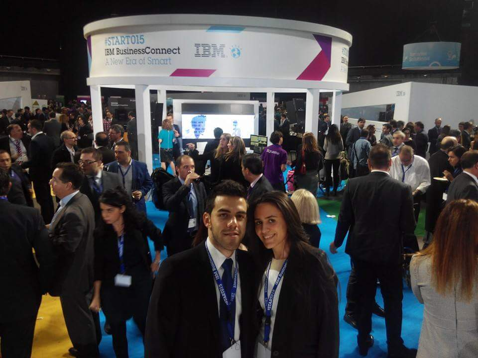

Target driven with unlimited amounts of energy and enthusiasm, highly organized with good planning skills.
Passionate, proactive, dynamic, very creative and hardworking. I pursue to continue cultivating my talent and develope my full potential.
Regarding the personal aspect, I consider myself a friendly person, who likes to meet people and enjoy family and friends.
I love practicing sports, currently trying CrossFit to become my new routine. I also love running and participate in popular races.
In my working life, I am a proactive person, who likes to look for that different way of doing things and to be constantly learning.
I studied Telecommunication Engineering in Madrid, spending some time in Germany, and In my forth year I started an internship at GING research group.
During my master thesis development I wanted to start knowing the enterprise world outside college and I did an internship program at IBM. I haven't left it since then.

Along this years I have had the opportunity to learn about many technologies, I'm currently dedicated to cloud business area, being more specific to microservices platforms and their environment (Continuous Integration and Continuous deployments workflows, k8s, Docker containers,...).
And as I am also passionate about agile methodologies and have offered me that opportunity, I organize design thinking and agile sessions, like retrospective or team buildings events.